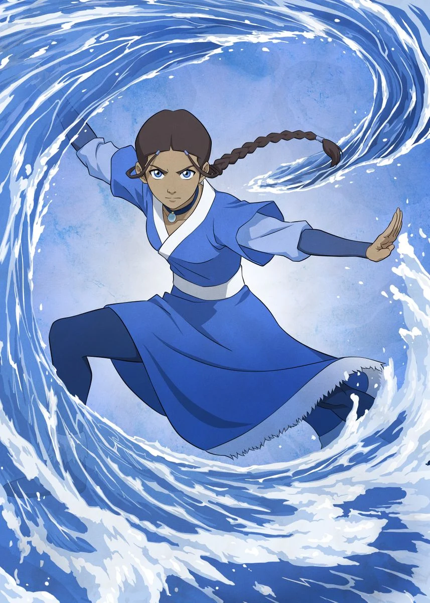

Katara

Katara is a character in Avatar: The Last Airbender who can water bend. She is a very powerful bender as she has the ability to blood bend and heal others.
- My personality is very similar to hers as we're both the oldest sisters and he's very demanding but caring.
- She's pretty badass.
- She's a resourceful and intelligent waterbender.
- I like waterbending out of all the elements.